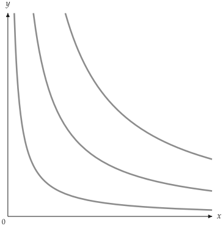
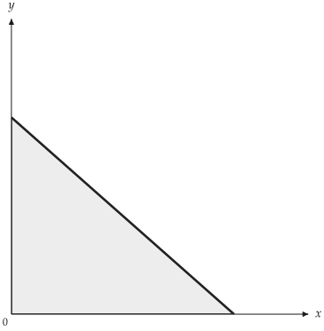
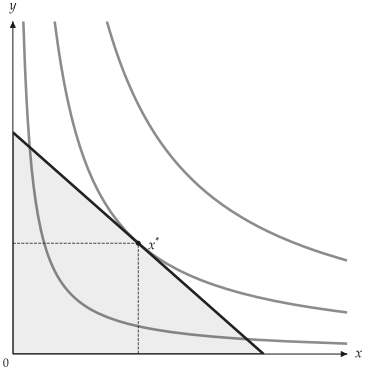
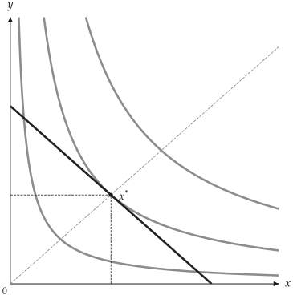
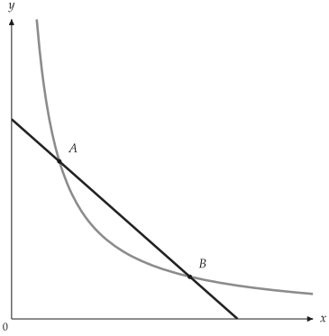
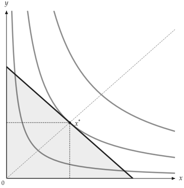
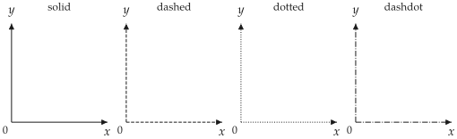
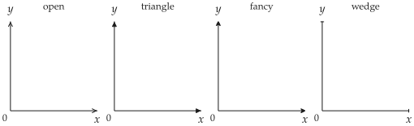

Canvas
Canvas builds on a matplotlib Figure and Axes and provides
layers for indifference curves, budget lines, equilibria and more.
Constructor
CanvasUpper bound of the horizontal axis.
Upper bound of the vertical axis.
Label at the tip of the horizontal axis.
Label at the tip of the vertical axis.
Figure title.
Raster export resolution, clamped to 1--1200.
Position of the horizontal label relative to the arrow; a LabelPosition
is also accepted (x_label_pos values).
Position of the vertical label relative to the arrow (y_label_pos values).
Generic font for all text: "sans" (the default), "serif" or "mono".
An installed family name such as "Arial" is an error; pass fonts instead.
Font files that replace the generic fonts, such as
TextFonts(serif="MyFont-Regular.otf"). A slot takes one file or a list of
files (regular, bold and so on); the slots you leave out keep the DejaVu
defaults. Nothing searches the system for fonts, so pass the paths.
An OpenType math font, or the path of its file, such as STIX Two Math. It
sets math through glyphkit. Without it matplotlib sets math.
The old font set names (stix, cm, dejavusans) are errors.
Width, style, colour and arrowhead of both axes (Styles).
Override for the horizontal axis.
Override for the vertical axis.
Colour and style theme (Themes and configuration).
Create a canvas and set its axis ranges, axis labels, fonts, line styles and
theme. Visual settings not passed explicitly come from the active Config
and Theme.
Above the arrow
Right of the arrow
Below the arrow
| Value | Position |
|---|---|
"left" |
Left of the arrow |
"top" |
Above the arrow |
"right" |
Right of the arrow |
Drawing methods
The add_* methods add a layer to the canvas and return the same Canvas,
so calls can be chained (Method chaining).
Canvas.add_utilityA number of curves, or a list of utility values such as levels.around(eq.utility, n=5) to place them around the optimum.
Focal utility level. The closest curve is drawn in the main style.
Style of the other curves; defaults to theme.secondary_ic_stroke.
Label the curves. Labels follow the curve's tangent and stay inside the plotting area.
"numeric" shows utility values; "ordinal" numbers the curves \(u_1, u_2, \ldots\) in increasing utility.
Draw indifference curves for a utility model.
lvls = levels.around(eq.utility, n=5)
cvs.add_utility(
model,
levels=lvls,
highlight_level=eq.utility,
show_ic_labels=True,
label_style="ordinal",
)
from utility_viz import Canvas, Config, levels, solve
from utility_viz.models import CobbDouglas
# figure settings
Config.load("econ-viz.toml").use()
model = CobbDouglas(alpha=0.5, beta=0.5)
eq = solve(model, px=2.0, py=3.0, income=30.0)
# italic x and y
cvs = Canvas(x_max=20, y_max=15, x_label="$x$", y_label="$y$")
# three curves around the optimum
cvs.add_utility(model, levels=levels.around(eq.utility, n=3))
cvs.save("add_utility.png")

Three indifference curves
Canvas.add_budgetTrue shades the feasible set with the theme's fill; pass a Fill to set its colour and opacity.
Colour, width, style and opacity of the line in one object; takes precedence over color, linewidth and linestyle (Styles).
Legend text, shown once show_legend() is called.
Draw the budget line \(p_x x + p_y y = I\).
from utility_viz import Canvas, Config
# figure settings
Config.load("econ-viz.toml").use()
# italic x and y
cvs = Canvas(x_max=20, y_max=15, x_label="$x$", y_label="$y$")
# the line and its feasible set
cvs.add_budget(2.0, 3.0, 30.0, fill=True)
cvs.save("add_budget.png")

Budget line and shading
Canvas.add_equilibriumDrop lines to both axes.
Draw the expansion path through the origin and the optimum.
Style of the equilibrium marker (Styles).
Mark the optimal bundle returned by solve().
from utility_viz import Canvas, Config, levels, solve
from utility_viz.models import CobbDouglas
# figure settings
Config.load("econ-viz.toml").use()
model = CobbDouglas(alpha=0.5, beta=0.5)
eq = solve(model, px=2.0, py=3.0, income=30.0)
# italic x and y
cvs = Canvas(x_max=20, y_max=15, x_label="$x$", y_label="$y$")
cvs.add_utility(model, levels=levels.around(eq.utility, n=3))
cvs.add_budget(2.0, 3.0, 30.0, fill=True)
# the optimum and dashed guides
cvs.add_equilibrium(eq)
cvs.save("add_equilibrium.png")

Equilibrium and drop lines
Canvas.add_rayDraw a ray from the origin with slope slope (\(\mathrm{d} y / \mathrm{d} x\)), for an
expansion path or a fixed consumption ratio.
from utility_viz import Canvas, Config, levels, solve
from utility_viz.models import CobbDouglas
# figure settings
Config.load("econ-viz.toml").use()
model = CobbDouglas(alpha=0.5, beta=0.5)
eq = solve(model, px=2.0, py=3.0, income=30.0)
# italic x and y
cvs = Canvas(x_max=20, y_max=15, x_label="$x$", y_label="$y$")
cvs.add_utility(model, levels=levels.around(eq.utility, n=3))
cvs.add_budget(2.0, 3.0, 30.0)
cvs.add_equilibrium(eq)
# a ray through the optimum
cvs.add_ray(eq.y / eq.x)
cvs.save("add_ray.png")

Expansion-path ray
Canvas.add_pointMarker text, as a string or a Label.
Offset of the text from the point, in points.
Style of the point marker.
Mark any point, such as a bundle to compare with the optimum.
from utility_viz import Canvas, Config, Label, levels, solve
from utility_viz.models import CobbDouglas
# figure settings
Config.load("econ-viz.toml").use()
model = CobbDouglas(alpha=0.5, beta=0.5)
eq = solve(model, px=2.0, py=3.0, income=30.0)
# italic x and y
cvs = Canvas(x_max=20, y_max=15, x_label="$x$", y_label="$y$")
# one indifference curve u = 5
cvs.add_utility(model, levels=[5.0])
cvs.add_budget(2.0, 3.0, 30.0)
# it cuts the budget line twice
# a Label puts text by the point
cvs.add_point(
3.17, 7.89, label=Label(text="A", position="top-right")
)
cvs.add_point(
11.83, 2.11, label=Label(text="B", position="top-right")
)
cvs.save("add_point.png")

Indifference curve cutting the budget line
Canvas.show
Canvas.saveshow() opens an interactive window. save() writes the file in the
format given by its extension (Export) and releases the
matplotlib figure, so call it last.
from utility_viz import Canvas, Config, levels, solve
from utility_viz.models import CobbDouglas
# figure settings
Config.load("econ-viz.toml").use()
model = CobbDouglas(alpha=0.5, beta=0.5)
eq = solve(model, px=2.0, py=3.0, income=30.0)
# italic x and y
cvs = Canvas(x_max=20, y_max=15, x_label="$x$", y_label="$y$")
cvs.add_utility(model, levels=levels.around(eq.utility, n=3))
cvs.add_budget(2.0, 3.0, 30.0, fill=True)
# equilibrium with the expansion path
cvs.add_equilibrium(eq, show_ray=True)
cvs.save("show_save.png")

The complete canvas
Styles
LineStyle defines line patterns, ArrowStyle arrowheads, and Stroke
bundles width, pattern, colour and arrowhead for axes, budget lines, paths
and drop lines.
Line styles
LineStyleSolid line.
Dashed line.
Dotted line.
Dash-dot line.
Solid, dashed, dotted and dash-dot lines (The four line styles). Axes accept
the enum or the matching string; other lines use Stroke(style=...).
LineStyle is MosaicKit's DashStyle under its old name.
from mosaickit import CanvasGrid
from utility_viz import Canvas, Config, LineStyle
# figure settings
Config.load("econ-viz.toml").use()
styles = [
LineStyle.SOLID,
LineStyle.DASHED,
LineStyle.DOTTED,
LineStyle.DASHDOT,
]
panels = [
Canvas(
title=style.value,
x_label="$x$",
y_label="$y$",
x_label_pos="bottom",
x_line_style=style,
y_line_style=style,
)
for style in styles
]
for panel in panels:
# small panels
panel.spec = panel.spec.replace(width=2.2, height=2.0)
CanvasGrid([panels]).save("line_styles.png")

The four line styles
Arrow styles
ArrowStyleOpen arrowhead (->).
Filled triangle (-|>), the default.
Curved, tapering arrowhead.
Thin wedge-shaped arrowhead.
Four arrowhead styles (The four arrow styles). Axes use x_arrow_style and
y_arrow_style; other lines use Stroke(arrow=...).
ArrowStyle is MosaicKit's; SIMPLE is its OPEN, and "->" and "-|>" are still accepted.
from mosaickit import CanvasGrid
from utility_viz import ArrowStyle, Canvas, Config
# figure settings
Config.load("econ-viz.toml").use()
styles = [
ArrowStyle.SIMPLE,
ArrowStyle.TRIANGLE,
ArrowStyle.FANCY,
ArrowStyle.WEDGE,
]
panels = [
Canvas(
title=style.value,
x_label="$x$",
y_label="$y$",
x_label_pos="bottom",
x_arrow_style=style,
y_arrow_style=style,
)
for style in styles
]
for panel in panels:
# small panels
panel.spec = panel.spec.replace(width=2.2, height=2.0)
CanvasGrid([panels]).save("arrow_styles.png")

The four arrow styles
Stroke
Stroke(
width=float,
style=LineStyle,
color=str,
arrow=ArrowStyle,
opacity=float
)Width, pattern, colour, arrowhead and opacity of one line. Fields left
unset inherit from the active theme. opacity ranges from 0 to 1.
Axis
AxisLabel, label position and line of one axis in one object. Canvas,
Figure, DemandDiagram and EdgeworthBox all accept x_axis and
y_axis. When shorthand arguments are passed as well, fields set in the
Axis win.
from utility_viz import Axis, Canvas, Label, Stroke
cvs = Canvas(
x_axis=Axis(
label=Label(text="x_1", fontsize=16),
label_position="bottom",
stroke=Stroke(width=1.2),
),
y_axis=Axis(label="x_2"),
)
Marker and Label
MarkerColour, size, shape and opacity of a point marker. shape takes a
matplotlib marker string such as "o", "s", "^", "D" or
"*".
LabelText, position, offset, colour, size, visibility and opacity of a label.
The position is a side or a corner; Label(visible=False) hides the text.
from utility_viz import Label, Marker
cvs.add_equilibrium(
eq,
marker=Marker(shape="s", size=8),
label=Label(position="bottom-left", offset=8),
)
cvs.add_point(
12,
2,
marker=Marker(color="black", shape="D"),
label=Label(text="A", position="left", fontsize=14),
)
top, bottom, left and right move one label after it has been
placed: by a number of points or by a string with a unit, such as
"10pt", "0.5em" (the label's font size) or "2mm". Automatic
placement still picks the spot, and later labels still avoid the moved
one. top = "2pt" under [utility.label.<name>] in econ-viz.toml sets
a default for every label of that kind (pt, mm, cm or in, no em); a
label's own value replaces it for that direction. Without nudges every
figure is unchanged.
from utility_viz import Label
cvs.add_equilibrium(eq, label=Label(top="10pt"))
cvs.add_point(5, 3, label=Label(text="A", left="6pt"))
Fill
FillColour and opacity of a shaded area. alpha is a compatible shorthand for
opacity; one call must not pass different values for both.
Method chaining
The add_* methods can be chained, ending with save():
Canvas(x_max=20, y_max=15).add_utility(
model, levels=lvls
).add_budget(2.0, 3.0, 30.0, fill=True).add_equilibrium(
eq, show_ray=True
).save(
"figure.png"
)